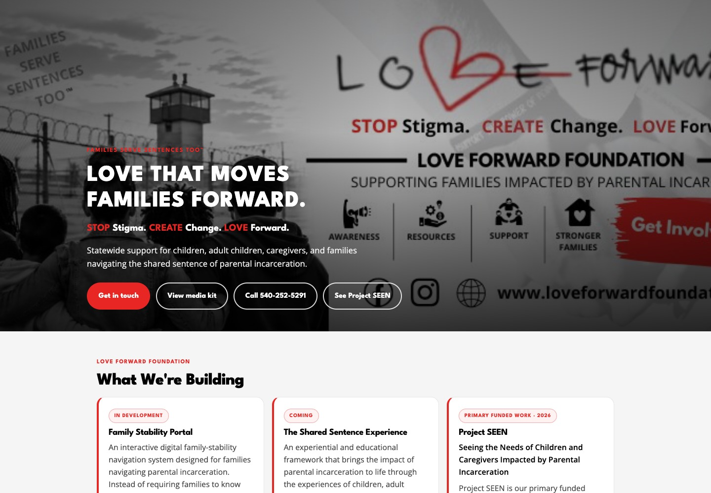
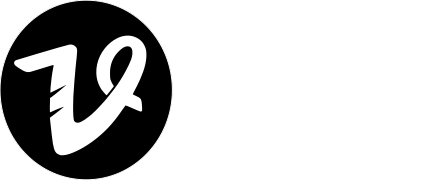
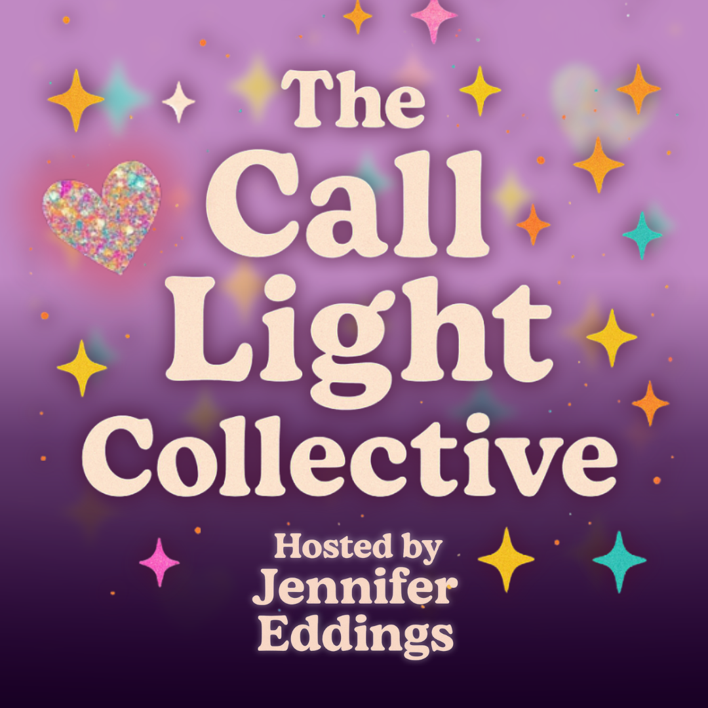
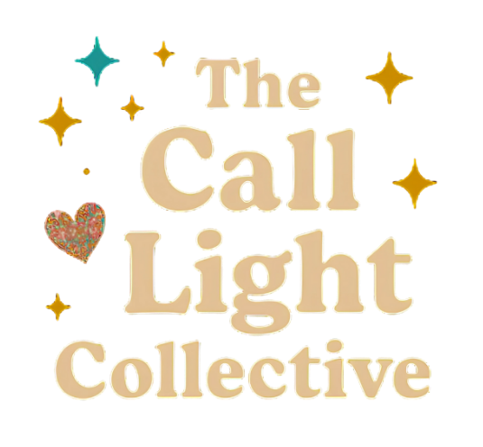
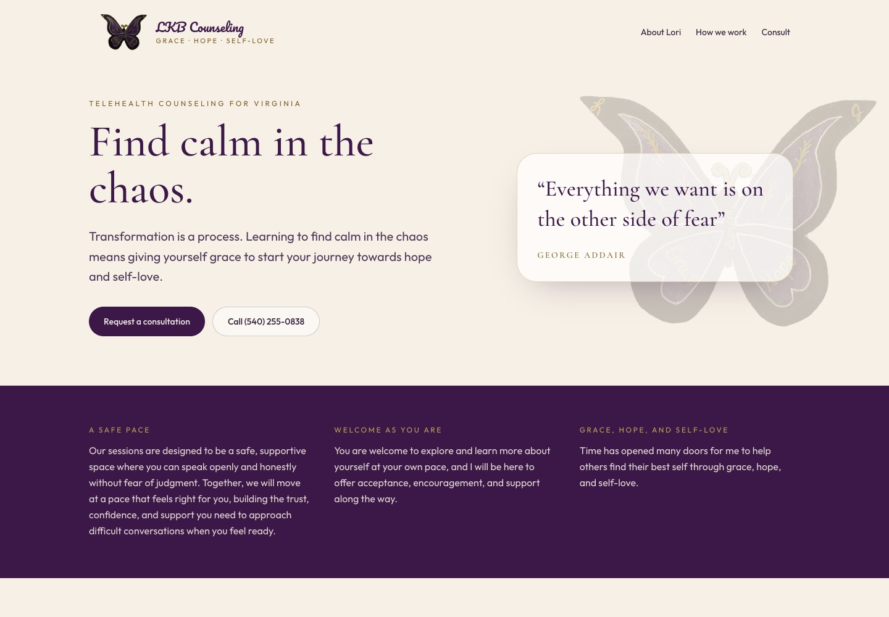
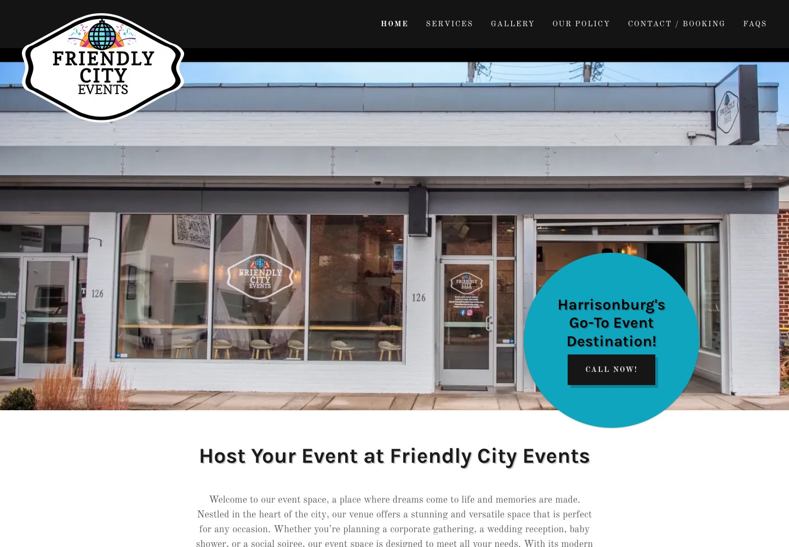
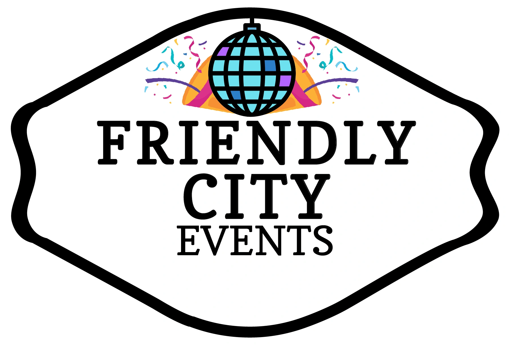
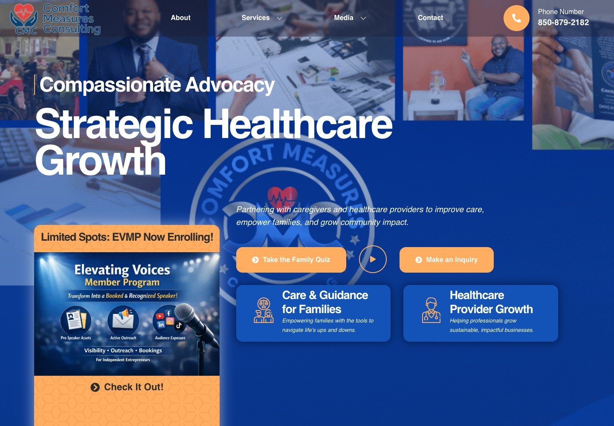

Web design · Digital presence
Love Forward Foundation
A mission-led website for Keisha Nicholson’s foundation, bringing its mission, current initiatives, and ways to connect into one place.
Nonprofit & communityView website ↗

OTV Agency / Selected work
Websites, content, and creative that help people show up as themselves. A selection of the work behind the brands.
Hollywood, Florida · Working beyond the Sunshine State

Web design · Digital presence
A mission-led website for Keisha Nicholson’s foundation, bringing its mission, current initiatives, and ways to connect into one place.
Social content · Creative direction
Neighborhood character, made for the feed. A social carousel pairing real product photography with a distinctly downtown Staunton voice.


Brand presentation · Web design
A personal brand hub bringing Jennifer Eddings’ story, visual identity, and podcast together in one expressive home.

Web design · Digital presence
A calm, welcoming website for Lori Kier-Benson’s counseling practice, with a clear introduction to her approach and a path to consultation.


Web design · Logo design
A welcoming website and distinctive logo for a Harrisonburg event venue, connecting the space’s personality with clear paths to explore and book.

Web design · Digital presence
A website connecting consulting, educational resources, and the Let’s Get Comfy podcast, with clear paths to explore services and media.
Your story could be next
Already working with OTV? Use the client intake ↗
Tell Cory what you’re building, where you’re headed, and what you need help bringing to life.
Start a conversation cory@otv.agency